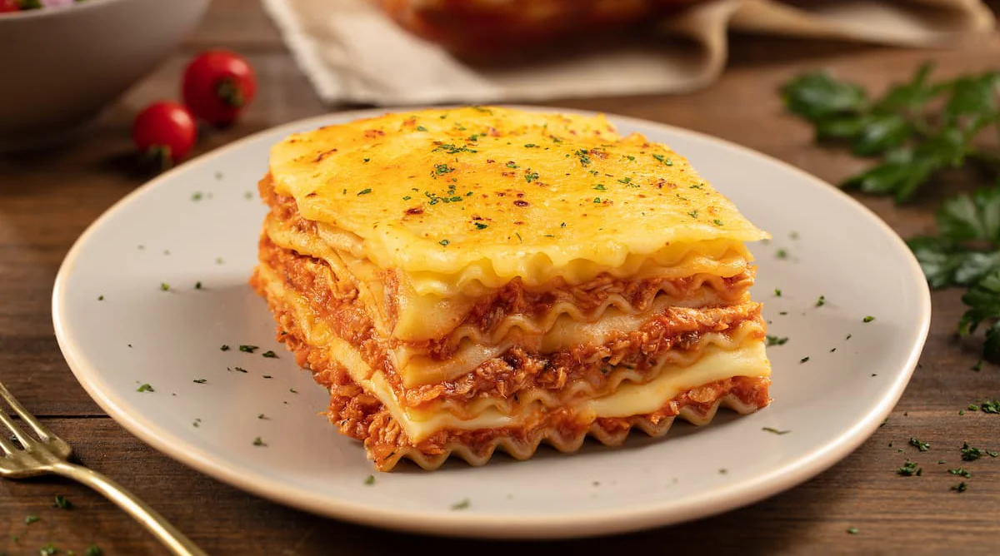

Lasagna

La lasaña es un tipo de pasta. Se suele servir en láminas superpuestas intercaladas con capas de ingredientes al gusto, más frecuentemente carne en salsa boloñesa y bechamel. Su origen es italiano y el plato preparado usualmente con carne suele llamarse lasaña al horno
Ingredients
- Lasagna noodles
- Ground beef or Italian sausage
- Onion (chopped)
- Garlic (minced)
- Tomato sauce
- Tomato paste
- Canned diced tomatoes
- Fresh basil (chopped)
- Fresh parsley (chopped)
- Salt
- Black pepper
- Ricotta cheese
- Egg
- Mozzarella cheese (shredded)
- Parmesan cheese (grated)
- Olive oil
Steps
- Preheat oven to 375°F (190°C).
- Cook lasagna noodles according to package instructions. Drain and set aside.
- Make meat sauce:
- Cook chopped onion and minced garlic in olive oil until soft.
- Add ground beef or sausage and cook until browned. Drain fat.
- Stir in tomato sauce, tomato paste, and canned diced tomatoes. Simmer for 30 minutes.
- Mix cheese filling:
- Combine ricotta cheese, egg, and parsley in a bowl.
- Assemble lasagna:
- Spread a thin layer of meat sauce in a baking dish.
- Add a layer of noodles.
- Spread a layer of ricotta mixture.
- Sprinkle with mozzarella and Parmesan cheese.
- Repeat layers, finishing with meat sauce and cheese on top.
- Bake lasagna:
- Cover with foil and bake for 25 minutes.
- Remove foil and bake for another 25 minutes.
- Let it rest for 15 minutes before serving.